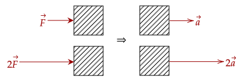
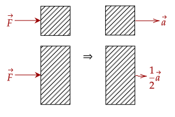
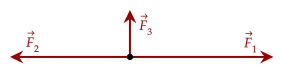
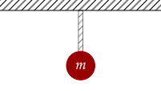
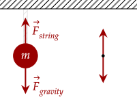

Newton's first law shows us that an object with no net force acting on it will stay in the state that it is in, being in rest or in motion. Newton's second law describes what happens when there is a net force acting on the object.
We know that when we push something, it moves. In our study of kinematics, we noted that movement is a change in position, or in other words there is velocity. When we change the velocity (from rest to moving or vice versa), we apply an acceleration.

If one person can push a box at some strength, what happens when two people push a box, at the same strength, in the same direction? In our experience, we know that together they can get the box moving from rest as fast; it can speed up twice as quickly. Thus, we can say that a higher force gives us a higher acceleration.
Mathematically, we can write this as that acceleration is directly related to the net force.
We also noted previously that there are objects which are harder to get moving or to stop moving; and we quantified this with mass.
Which is easier to move: a 2kg box or a 1kg box?
Intuitively, the 1kg box is much easier to move; it has less inertia.
In fact, we can approximate this with that the 1kg box should be about twice as easy to move than the 2kg box. If we push with the same force on both boxes, we can estimate that the 1kg box should accelerate twice as fast than the 2kg box.

One may be confused on why we use acceleration instead of velocity. Recall that when we go from rest to moving, we change our velocity. This change in velocity is precisely acceleration.
This can be written as an inverse relationship with acceleration.
We now have two relationships, and we can condense both of them into one relation.
Rearranging this equation gives us one of the most important equations in physics, which governs basically everything from the movement of grains of rice to the orbiting of galaxies. This gives us (one of) the representations of the Law of Acceleration.
One thing to note with this equation is the use of direction; a force causes an acceleration in the direction of the force.
Question 1
(HRK Q3.10) What is the relation—if any—between the force acting on an object and the direction in which the object is moving?Answer
The force acting on an object causes an acceleration in the direction of the force. If it is acting in the same direction as which the object is moving, the object speeds up; if it is acting in the opposite direction, the object slows down.
Question 2
(LSM CQ5.5) A rock is thrown straight up. At the top of the trajectory, the velocity is momentarily zero. Does this imply that the force acting on the object is zero? Explain your answer.Answer
In our study of free fall, we noted that the acceleration due to gravity is always present. Since there is an acceleration, there is still a force acting on it.
Question 3
A force is applied on an object, giving it an acceleration. Find the effects of the following on the acceleration if:(a) the force is doubled
(b) the force is halved
(c) the mass is tripled
Answer
Since we noted that force has a direct relation on the acceleration, if it is doubled or halved, the same effect happens on the acceleration; it is doubled (2x) and halved (1/2x) respectively.
We also saw that the mass has an inverse relation. Thus, if the mass is tripled, the acceleration is cut in three (1/3x).
Recall that force is measured in Newtons. Using our equation, we can see what the unit Newton really is.
This shows that the unit Newton is actually just the combination of (kg)(m/s²).
We can also use this law to "derive" the Law of Inertia. If the net force is zero, that means the acceleration must also be zero. We can't set mass as zero, as that is impossible.
Exercise 1
(LSM E5.24) Andrea, a 63.0-kg sprinter, starts a race with an acceleration of 4.200m/s². What is the net external force on her?Answer
Computing the net force is simply just using the equation we are given. Plugging in the values gives us the net force.
Which gives us the force is 264.6N.
As force is a vector, it can have multiple directions; and can even be resisted by other multiple forces.
Exercise 2
(LSM E5.37) A particle of mass 2.0 kg is acted on by a single force, N. What is the particle’s acceleration?Answer
Now, we are obligated to include the direction of acceleration. Rearranging, we get the following equation, then we substitute.
The acceleration is then 9îm/s².
Exercise 3
(LSM E5.38) Suppose that the particle of the previous problem also experiences forces N and N. What is its acceleration in this case?
Answer
Now, we have to add direction into the problem. The first thing we should do is analyze the x-component and y-component separately. The x-component is simple enough; there's only two forces that act horizontally.
N
Using our equation gives us the horizontal acceleration.
We then get that the horizontal acceleration is (1.5î)m/s². Since there is only one vertical force, we can get the vertical acceleration quite quickly.
With the vertical acceleration of (3.0ĵ)m/s², we can get the magnitude and direction of acceleration via what we used before: trigonometry and the pythagorean theorem.
For the angle measure, we use the arctan() function, as we did before.
We thus get that the acceleration of the particle now is 3.35m/s² at an angle of 63.43° from the +x axis.
We can now apply this principle to get the kinematic quantities that we discussed. Here, we may need to use the kinematic equations that we set up.
Problem 1
(LSM E5.34) A car with a mass of 1000.0 kg accelerates from 0 to 90.0 km/h in 10.0 s.(a) What is its acceleration?
(b) What is the net force on the car?
Answer
The first part is simply using our kinematic equations. We first convert the 90km/h to m/s.
We then use our kinematic equation to solve for the acceleration.
Giving us 2.5m/s². We now use our equation for the net force.
Which equates to 2500N.
Problem 2
(HRK E3.2) A 5.5-kg block is initially at rest on a frictionless horizontal surface. It is pulled with a constant horizontal force of 3.8 N.(a) What is its acceleration?
(b) How long must it be pulled before its speed is 5.2 m/s?
(c) How far does it move in this time?
Answer
The acceleration can be gained by rearranging the equation.
Which gives us the acceleration is 0.69m/s². For the next two questions, we return back to our kinematic equations. We note that the initial velocity is 0m/s at rest. Thus, we solve for the time given the final velocity.
Giving us 7.54s. Then, we can get the displacement by using the equation we had for constant acceleration.
Which equates to 39.23m.
Just like how if there is a net force, there is an acceleration, the converse is true; if there is an acceleration, there is a net force.
Likewise, with the Law of Inertia, we show that if there is no acceleration, there is no net force. In other words, each force balances out. With this, we can now more easily identify what forces occur on various objects.
Since we haven't studied the various forces, we can't give them special names yet. For now, we can use subscripts such as . Later, we will revisit these problems and use the correct symbols for the forces, if necessary.
Question 4
(LSM P5.68b) A ball of mass hangs at rest, suspended by a string. Draw the free body diagram for the ball.
Answer
Since we are on Earth, we are pulled towards the ground by gravity. Thus, our free body diagram should include this. However, we note that the ball is at rest, and isn't falling to the ground. This must mean that something is keeping it from moving; this is the string that the ball is attached to, which is pulling it.
We then draw the two forces. Since the object is at rest, they should be the same magnitude.
